KOGZIO SOLUTIONS | ODOO 19
Plan, assign and follow up on activities with a clear dashboard, time tracking, recurring work and reminders in one workspace.
ACTIVITIES MANAGEMENT
Odoo activities are scattered across records. This module brings them together: managers see the whole picture, supervisors follow up on their team and employees focus on their own tasks. Overdue work, completed work and cancelled work are always one click away.
BUILT FOR PRODUCTIVITY
Everything your team needs to organize, assign and follow up on activities.
Counters for All, Planned, Completed, Overdue and Cancelled activities with a paginated table and quick Done, Cancel, View and Origin actions.
Filter by activity type, user, supervisor, customer, priority, document model and deadline range. Clear everything in one click.
Employee, Supervisor and Manager roles. Employees see their own work, supervisors also see their team, managers see everything.
Complete an activity with feedback, or use Done & Schedule Next. Feedback is posted on the related document chatter.
A reason is required to cancel. The cancelled date and reason are saved and logged on the document for a clear audit trail.
Start and stop a timer on any activity. Time spent is added up and remaining hours are calculated from the estimate.
Repeat activities daily, weekly, monthly or yearly. The next occurrence is created automatically after completion.
Assign one activity to several users as a shared activity, or create an individual activity for each user.
Due and overdue email reminders, bell indicators and scheduled notifications, subject to configuration.
Star priority and colored tags. Tags can be limited to a company in multi-company databases.
Open a prefilled WhatsApp share link from the activity form; you choose the recipient and send the message.
Select records in a list view and schedule an activity for all of them in one step.
DASHBOARD OVERVIEW
Monitor activity statuses, deadlines, filters, and quick actions from one central workspace.
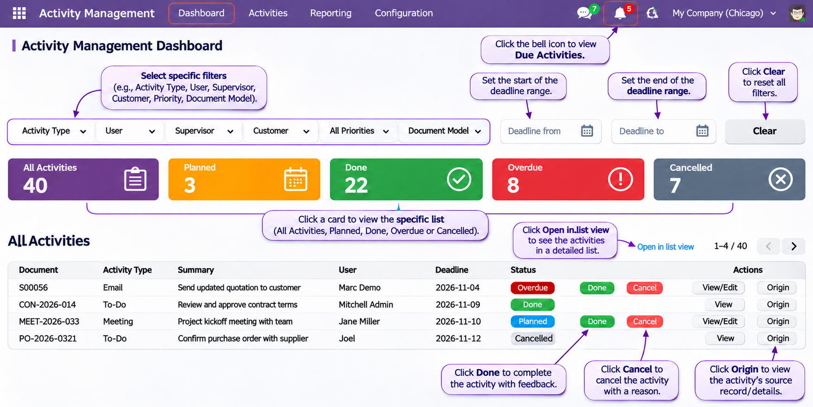
Review activity counters, filter by responsibility or deadline and use quick actions to complete, cancel or open an activity and its source document.
ACTIVITY SCHEDULING
Schedule an activity with its type, assignee, due date, notes, priority and other available options.
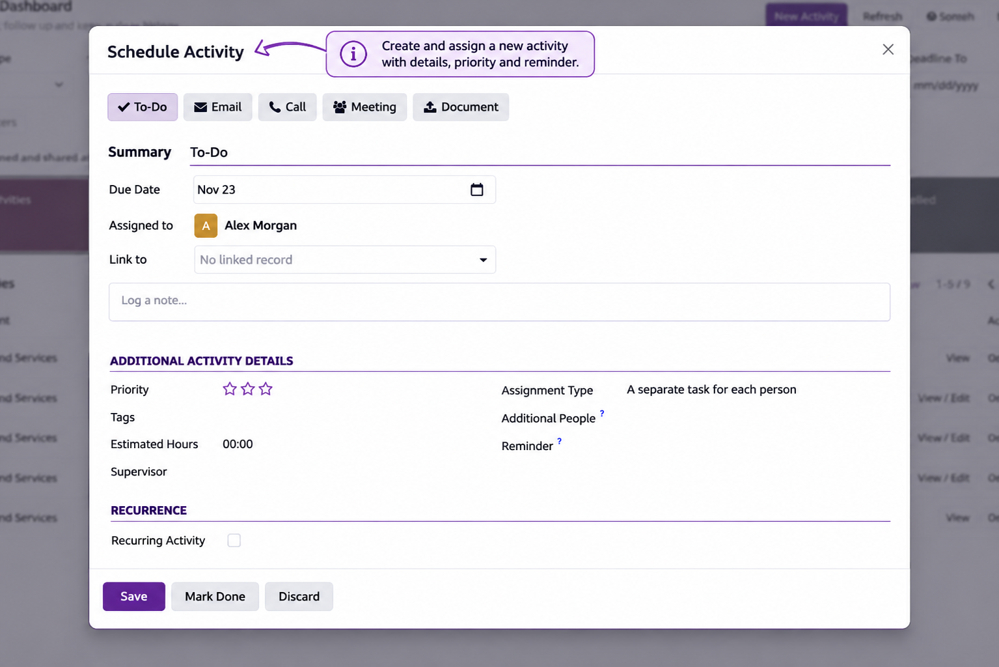
MASS SCHEDULING
Select multiple records and schedule activities for them together using the Actions menu.
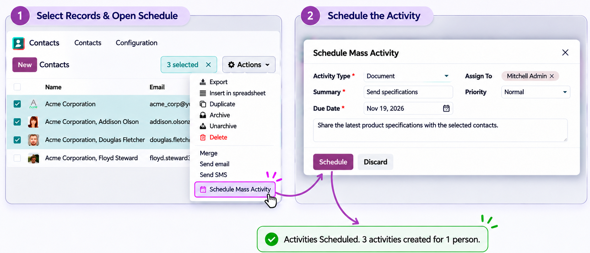
Select records in a list view, choose Actions → Schedule Mass Activity, enter the details and click Schedule to create activities for the selected records.
ACTIVITY DETAILS
See activity information, progress, assignment, time tracking, reminders, recurrence and history in one activity form.
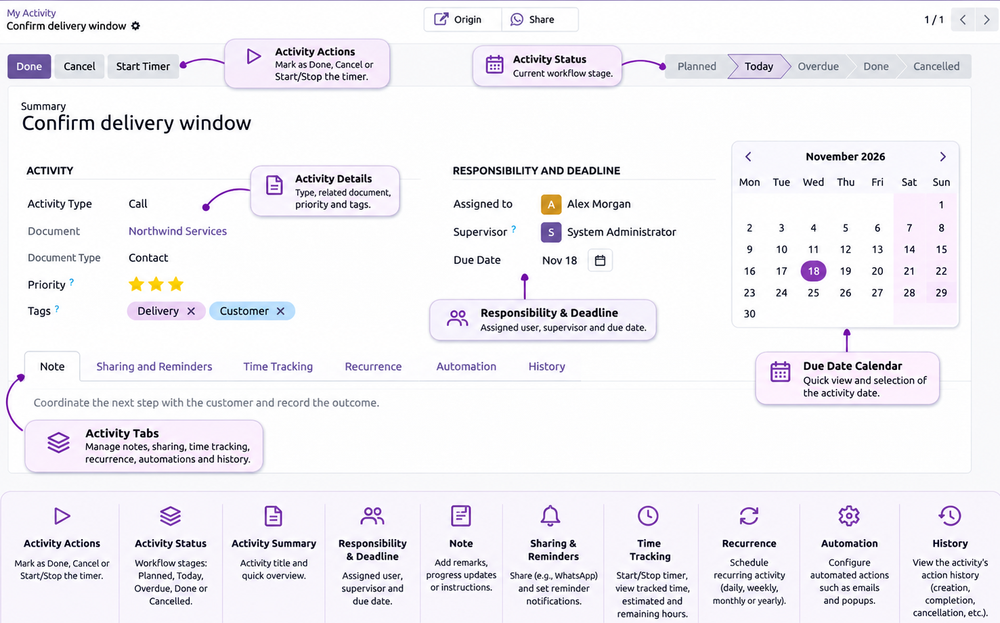
CHATTER INTEGRATION
Use the activity info button, standard activity actions, start or stop the timer, and share via WhatsApp directly from chatter.
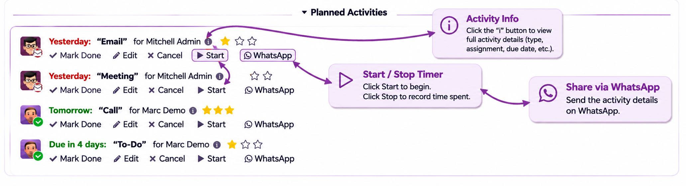
Filter activities by user or activity type, set priority with stars, start or stop time tracking and open WhatsApp sharing directly from the chatter.
RECURRING ACTIVITIES
Configure repeat intervals and let the scheduled action create the next occurrence after completion.
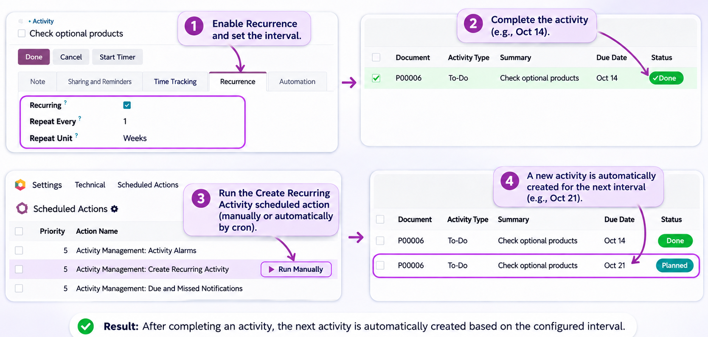
Enable Recurring and set the interval. After completion, the Create Recurring Activity scheduled action creates the next occurrence using that interval.
REMINDERS & NOTIFICATIONS
Set reminders, acknowledge alerts and use scheduled notifications for upcoming and overdue work.
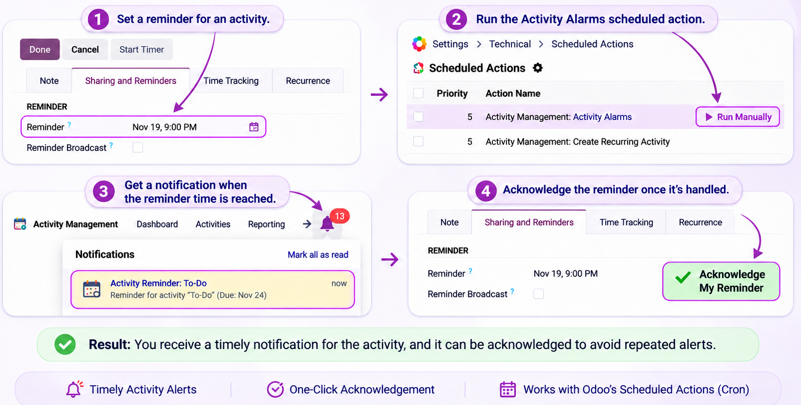
Set a reminder in Sharing and Reminders and acknowledge it once handled. Automatic reminder and recurrence processing depend on the corresponding scheduled actions being enabled.
BULK ACTIONS
Select multiple activities and mark them done with feedback or cancel them with a reason.
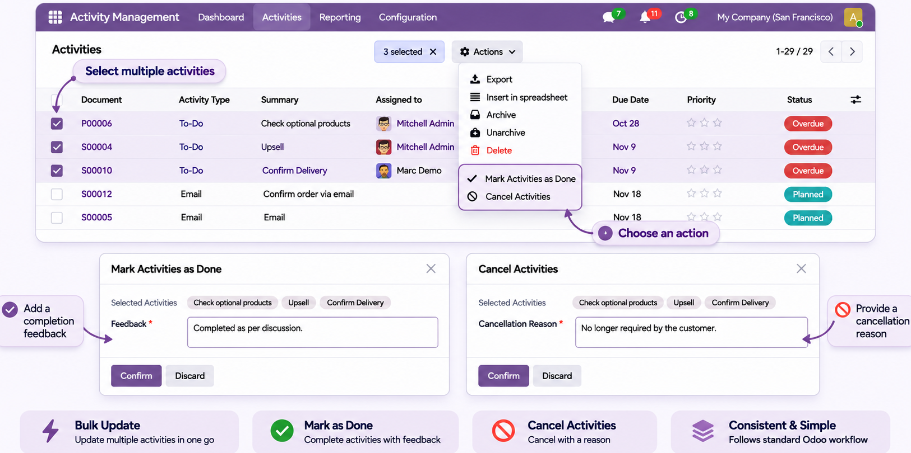
Select several activities and choose Mark Activities as Done or Cancel Activities from Actions. Add completion feedback or a cancellation reason, then confirm the update.
DAILY WORK
Switch between personal work, team follow-ups and broader activity views according to user permissions.
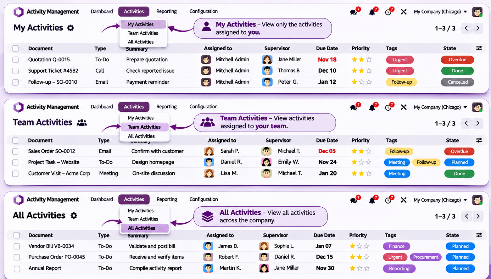
ACCESS CONTROL
Role-based visibility helps users focus on the activities they are permitted to access.
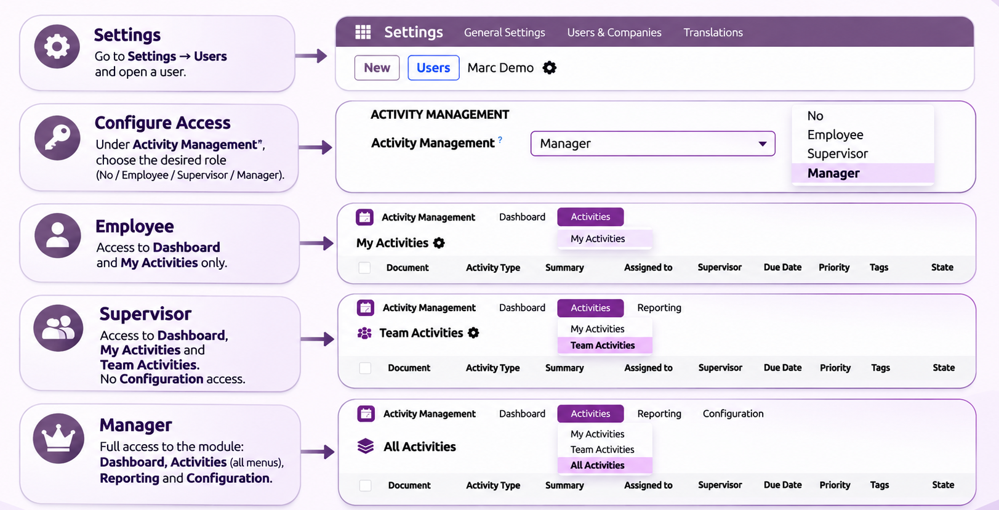
MULTI-COMPANY
Work with permitted activities across selected companies while respecting company access rights.
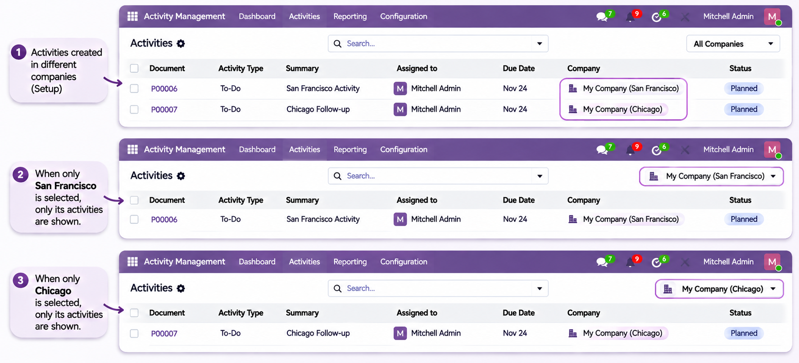
Use the company selector to view activities across selected companies or focus on one company, according to user access rights.
INSIGHTS
Analyze activity workloads and progress with graph and pivot reporting views.
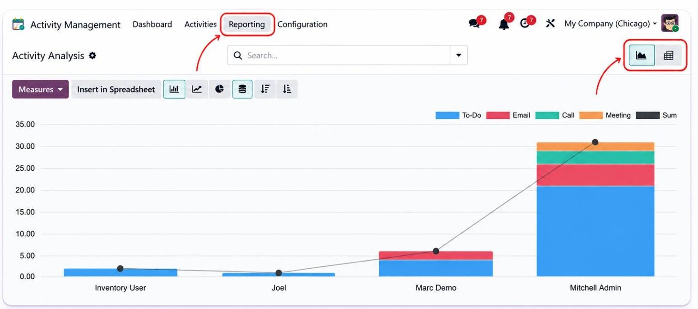
CONFIGURATION
Configure dashboard record counts and organize activities with colored, company-specific tags.
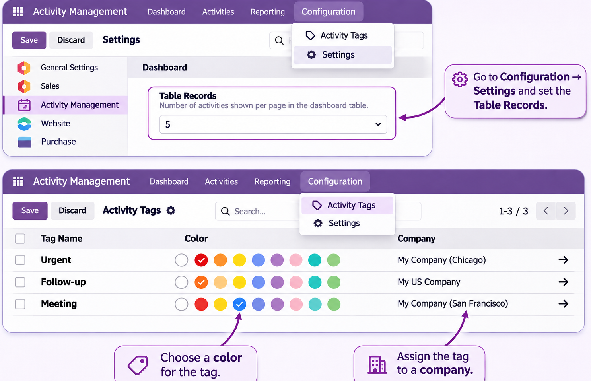
PORTAL ACCESS
Let enabled portal assignees search, filter, view and complete permitted activities.
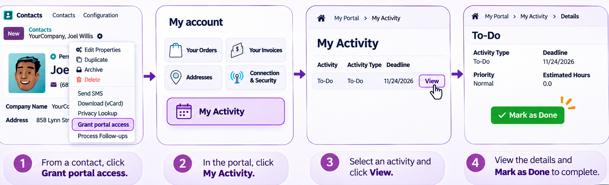
SIMPLE WORKFLOW
Choose roles and settings.
Schedule activities and set responsible users.
Watch deadlines, priority and time.
Finish with feedback or cancel with a reason.
Odoo version: 19.0
Editions: Community and Enterprise
Dependencies: mail, portal
Professional Odoo Solutions & Business Applications
Email: info@kogzio.com
Website: www.kogzio.com
Developed by Kogzio Solutions. Odoo 19